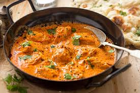
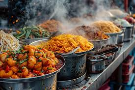

North India
Rich gravies & breads
North Indian food includes varied breads, pulses, vegetables, dairy-based preparations and richly spiced dishes.
Indian food traditions are deeply regional. Ingredients, climate, agriculture, history and community practices all influence what appears on the table.

North Indian food includes varied breads, pulses, vegetables, dairy-based preparations and richly spiced dishes.

Dosa, idli, sambar and many regional preparations show the importance of rice, lentils, coconut and fermentation.

Food traditions across eastern and central regions include rice-based dishes, fish, vegetables, sweets and distinctive spice combinations.

Western regions are known for varied snacks, breads, sweets and street-food traditions shaped by local ingredients and communities.

Sweets are closely associated with hospitality, festivals, ceremonies and everyday treats. Gulab jamun is one familiar example among a huge range of regional desserts.
Family recipes, seasonal ingredients and regional cooking methods can preserve memories and connect generations.
See food in festivals